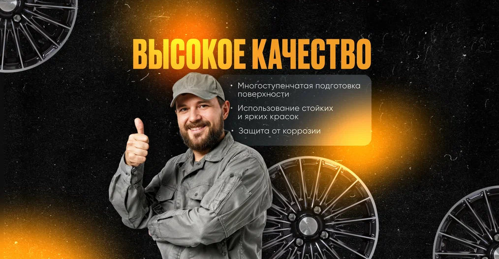

Порошковая покраска дисков
Комплект из 4 дисков · за 1 день · 50+ цветов
от 10 000 ₽гарантия 3 года
Порошковая покраска дисков, сложные оттенки, восстановление и шиномонтаж в студии RoAL.

RoAL · Ярославль
Покраска дисков
и автомобильный стиль
Прайс-лист
Комплект из 4 дисков · за 1 день · 50+ цветов
Покраска дисков в сложные оригинальные оттенки
Аккуратная работа с деталями тормозной системы
Подготовка поверхности дисков перед работами
Восстановление геометрии дисков
Обслуживание легковых автомобилей
Почему RoAL
Автомобиль ставят на специальные безопасные подставки, а не на «пеньки».
Мастера могут отговорить от небезопасной покраски сильно изношенных дисков, если это важно для безопасности.
Попадание в заводской цвет и работа со сложными оригинальными оттенками.
Готовы обновить автомобиль?
Позвоните или напишите в официальную группу RoAL, чтобы уточнить детали и записаться.
Контакты
Студия тюнинга, покраска дисков и шиномонтаж
Открыть маршрут в Яндекс Картах ↗